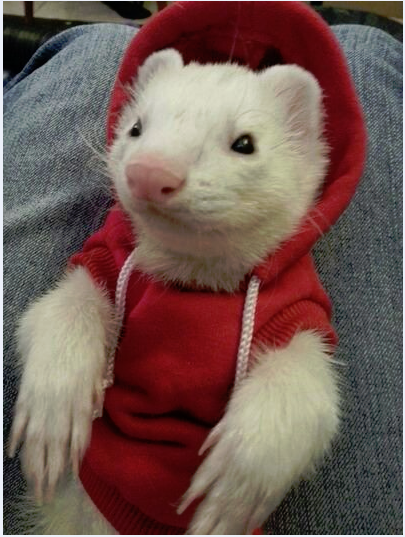

This is me.
My name is Lucas Altman. I'm a geek, a designer, and an IT guy. I am currently completing a Bachelors of Arts in New Media and Communication Technology from the Ohio State University in Columbus, OH. While completing my degree, I work as a Student Desktop Support Technician in the Information Technology/Infrastructure Support Department at the Ohio State University Libraries. I have experience with Windows 7 and Windows XP, and with System Center Configuration Manager and Active Directory Administration.
This website is my final project for Communication 4511 during the Spring 2014 semester, in the School of Communication. It contains some example code, design examples from my previous visual design class, and important links and contact information. It is built using a number of frameworks and plugins. It uses the Bootstrap template for the navigation bar and some grid alignment, the Blue Imp Gallery script and bootstrap plugin for the gallery page lightbox, and Google Prettify on the example code page in order to give syntax highlighting.
Please, feel free to look around. If you would like to contact me, obtain a copy of my resume, or connect with me on LinkedIn or Twitter, head over to the Contact page.